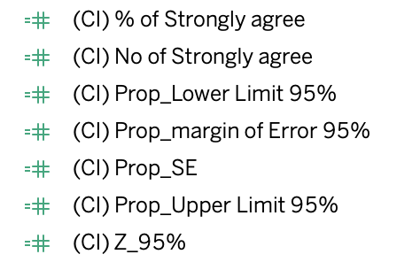

1. Overview
This post will show how to visualise the result of surveys regarding how people think about Covid-19 vaccination around the world. The original data can be found at Imperial College London YouGov Covid 19 Behaviour Tracker Data Hub Firstly, we will criticize the original charts then show how to make better visualization from the same data set.
- Original chart
In this GitHub page, below information and data files were used for analysis.
- README.md
- codebook of the core questionnaire codebook.xlsx
- list of countries with data countries.csv
- individual country files with respondent-level data data/country-name.csv
2. Critique of the original charts
2.1. Clarity
- This chart is a visualisation for a question If a Covid-19 vaccine were made available to me this week, I would definitely get it. However, the title of this only show the answer of the question. We need to show proper title to clarify the result.
- This chart is sorted by country name in alphabetical order. Users cannot figure out which country is more pro-vaccine.
- Users cannot tell which country is most pro-vaccine or not because the results are visualised using 100% stack bars. It is difficult to show using stack bars, because users should compare all the sizes and values line by line.
- There is no indicator to compare and sort. We need to create a new value to compare among countries properly.
- There is a typo error in the title pro-vacinne. It need to be changed to pro-vaccine.
- % of Total Record, the title of x-axis should be changed to Percentage of Total Reocrd
- As we seen above, this chart also regarding a question If a Covid-19 vaccine were made available to me this week, I would definitely get it. However, the title of this only show the answer of the question. We need to show proper title to clarify the result.
- With this chart, we cannot see how many of respondents replied to the survey. Therefore, it is hard to say that percent of people in Sweden is higher than that in Canada, in terms of Confidence interval. We need to show the total number of respondents by country to show the result for clarity.
2.2. Aesthetics
- This chart used 5 different color to show the proportion of each answer. However, the colors are not consistent to show the scale of answers. We need to use the color scheme wisely, grouping the similar sentiment
- All the countries have lowercase letters. We need to change first letter of country name.
- We can see a number of countries in a form of bar chart with white background color, so it is not easy to compare by countries. We need to shade each rows to differentiate results.
- The numbers in x-axis have decimal point. We can eliminate all decimal points which are not needed.
- The title of legend is not appropriate, because users cannot understand properly with Vac 1.
- The legend for the charts only shows the scale of 1 and 5. To make the legend clearer, we need to show all the proper title of the legend
3. Alternative suggestion of the graph
3.1. Sktechs of graphical presentation and advantages
1) Sketch1 - Dashboard
- After finding several issues in clarity and aesthetic, we can design a new dashboard to show the survey result clearly. Below the left side chart clearly shows that average scores of answers comparing countries. Also the right side chart clearly shows that not only the percentage of respondents strongly agreed to a question, but also confidence interval ranges.
- Note that in final dashboard, we will add the total number of respondents by country next to the % of strongly agreed to vaccination chart.
- As seen below, we can put question filter upper position so that users can easily see what about the chart trying to show. Also we can locate legend of Answer and Scale of answer to show users to see easily.
2) Sketch2 - Tooltips
- The dataset contains several important attributes, such as gender, age, answered week, and employment status. Below charts are also important that show how the answers are organised. These charts will be displayed when the you hover over to the previous dashboard graph.
- By showing the detailed answers by different sub-categories, users can understand easily which factors were affected to the results.
- Also, we can add Average score through the chart to compare easily by the sub-categories.
- Lastly, we can also include exact numbers of the results, which are hard to show in main dashboard due to space limitation.
3.2. Final dashboard of visualisation using Tableau.
All the charts we designed above were rearranged for one cleaned dashboard
4. Step-by-step preparation of visualization
4.1. Preparation for data sets
Some individual country files are compressed, so you have to decompress them in csv format.
4.2. Upload raw data set in Tableau
After decompressing all files, data sets are needed to be imported to Tableau.
- In order to union all the 30 individual country csv files, you need to remove pre-set data set(germany.csv). Then, drag and drop New Union to the pane. Next, select all the csv files on the next and drag into the dialog box.

- For the purpose of the analysis, we need to hide unnecessary fields first. Click Manage Metadata button then select unnecessary fields. Next, right click and hit Hide. Leave required fields only as below.


- Change name of field of Table Name to Country. Then click Aliases and exclude .csv. in all Values on the right side.

- After changing all the name of fields regarding questions, select all the six question fields and right click to pivot the values.

- Then change pivoted fields name to Question and Score.

- Click Create Group.. in Age field. Select all the age instances that you want to group and click Group button.

- Go to Sheet1 and drag and drop Score into Filters pane. Un-check Null values in Score because the values are not necessary to visualise.


- Click Analysis > View data menue and click Extract All to get necessary data.

4.3. Upload cleaned data set in Tableau and create necessary calculated fields for analysis
Open new tableau file and connect to the extracted file created above.
Create Answer field using created calculated field function as below. By using letters not digits, users may not be confused easily.

- It is more intuitive to express positive responses in high numbers. So, change all the score values in reverse order, using created calculated field function
%20change%20the%20values.png)
4.4. Create gantt chart to show the survey results
We need to make a chart so that we can easily recognize the results of the survey at a glance. In order to compare the proportion of respondents easily, we can divide axes and compare them at the same time.
- Create Negative Score Values field, using created calculated field function. Note that you should use CNT to calculate the whole number of respondents.

- Create Total Negative Scores field using created calculated field function. You should click Default Table Calculation menu and change Comute using from Automatic to Answer.

- Create Total Score field using created calculated field function and click Default Table Calculation then change Compute using to Answer.

- Create Gantt Start Point field using created calculated field function.

- Click Gantt Start Point field and click Compute Using to Answer

- Create Percentage field using created calculated field function to visualise the size of the gantt chart

- Create Gantt Percentage field using created calculated field function and click Default Table Calculation then change Compute using to Answer.

- Drag and drop Gantt Percetage field into Columns and Country into Rows. Also Drag and drop Answer.

- Drag and drop Question field into Filter pane and change the Marks to Gantt Bar. Lastly, Drag and drop Percentage field onto Size button to show the percentage of respondents.

- Click Answer field and Sort menu. Check Manually in Sort by menu and change the order as below

- Create Avg Score field using created calculated field function. Note that you should use CNT field to calculate sum of respondents.

- Change the Gantt chart color

- Chage Marks to Circle and drag and drop Avg Score onto Label button. Then click and change Compute using to cell

- Click lable and change Font format and alignment as below

Click Avg Score in Columns and check Dual Axis

Right click above axis and click Edit axis. Check Fixed range for changing the range of axis from 1 to 5

- After changing Size of Circle chart and color to White
- Add reference to show 0% more clearly

- Add reference to show Average line. Type label
Score =

- The final Gantt chart!

4.5. Create Confidence Interval chart
The number of respondents are different among countries. Therefore, we cannot confidently say that the average scores of answers we have created above reflect correctly the opinion of whole country. For this reason, we can show the confidence interval range to give the better information to users. Based on the formula, when the number of sample increases, the range of confidence interval shorten.

- First of all, we need to create 7 calculated field to visualise confidence level. The formula for the fields are below.

1.. (CI) No of Strongly agree
IF [Answer]=Strongly agree THEN [CNT] ELSE 0 END
2.. (CI) % of Strongly agree
SUM([(CI) No of Strongly agree])/SUM([CNT])
3.. (CI) Z_95%
1.959964
4.. (CI) Prop_SE
SQRT(([(CI) % of Strongly agree]*(1-[(CI) % of Strongly agree]))/SUM([CNT]))
5.. (CI) Prop_margin of Error 95%
[(CI) Z_95%]*[(CI) Prop_SE]
6.. (CI) Prop_Upper Limit 95%
[(CI) % of Strongly agree] + [(CI) Prop_margin of Error 95%]
7.. (CI) Prop_Lower Limit 95%
[(CI) % of Strongly agree] - [(CI) Prop_margin of Error 95%]
- Drag and drop (CI) % of Strongly agree field into Columns and Country into Rows

- Drag and Drop (CI) Prop_Lower Limit 95% and (CI) Prop_Upper Limit 95% fields onto the column axis.
4. Change Measure Values graph to Line and click left button and change to Path
- Right click on the upper axis and check Synchronize Axis
- Click Contry in Rows and check Sort to sort Descending order by (CI) % of Strongly agree.
- Add reference line to show average of (CI) % of Strongly agree over the countries.
- Add tooltip to show the detail figures
- Create a new worksheet for showing total number of respondents by country. Drag and drop Country field into Rows and CNT onto Label button. Also change the color shading to make clearer.
- Click Country field to sort by (CI) % of Strongly agree
4.6. Create tooltip charts for showing detail of answers
- Changes of answers through weeks
- Drag and drop Qweek into Columns and Avg Score into Rows. In order to show the figures, put Avg Score onto Color and Label button in Marks
- Change chart format to Line
- Add reference line to show the average value of Avg Score through week
- Answers by Gender
- Drag and drop Gender into Columns and Avg Score into Rows. In order to show the figures, put Avg Score onto Color and Label button in Marks.
- Change chart format to Bar
- Add reference line to show the average value of Avg Score through gender
- Answers by Age
- Drag and drop Age (Group) into Columns and Avg Score into Rows. In order to show the figures, put Avg Score onto Color and Label button in Marks.
- Change chart format to Bar
- Add reference line to show the average value of Avg Score through age group
- Answers by Employ Status
- Drag and drop Employ Status into Columns and Avg Score into Rows. In order to show the figures, put Avg Score onto Color and Label button in Marks.
- Change chart format to Bar
- Add reference line to show the average value of Avg Score through Employ Status
- Answers by Household Children
- Drag and drop Household Children into Columns and Avg Score into Rows. In order to show the figures, put Avg Score onto Color and Label button in Marks.
- Change chart format to Bar
- Add reference line to show the average value of Avg Score through Household Children
- Detailed figures for Country_gantt chart
- Duplicate Country_gantt chart worksheet
- Remove AGG(Avg Score) field in Columns
- Drag and drop Percentage field on Label button
- show all tooltip charts when hover over to the Country_gantt chart
- Go back to Country_gantt chart worksheet we made ealier, and click Tooltip button in Marks > All
- In order to show all the detailed charts, type as below
4.7. Create Dashboard
- Click Dashboard icon and change Size to Automatic
- Drag and drop A Text object to the pane
- Drag and drop CI_Chart and Country_gantt on the pane side by side
- Move Select question filter and Answer legend above the two charts
- Click triangle and check Single Value (dropdown)
- Drag and drop A Text object below the Answer legend. then type below
- Adjust sizes of boxes we put
- Drag and drop more A Text objects between Answer label box and chart. Then type titles repectively.
- Drag and drop CI_chart_respondents next to CI_chart.
- The final Dashboard
5. Major observations
5.1. People in EU are more likely to get vaccination comapred to that in Asian
- As seen in the
- As illustrated in the statement in original chart, the share of senior population is getting larger than before. The share of residents aged 55-64 and 65&over rose from 14% (2009) to 17% (2019) and from 11% (2009) to 17%(2019), respectively. Whereas, the share of young age groups declined from 59% (2009) to 52% (2019). This fact affects to changes of the share of resident labour force consequently, because the working young population cohorts moving into the senior group.
5.2. The older, the more agree to vaccination
- As seen below,
5.3. The portion of agree to vaccination increases over time
- As seen below,
Q2. I am worried about getting COVID19
Q3. I am worried about potential side effects of a COVID19 vaccine
The END